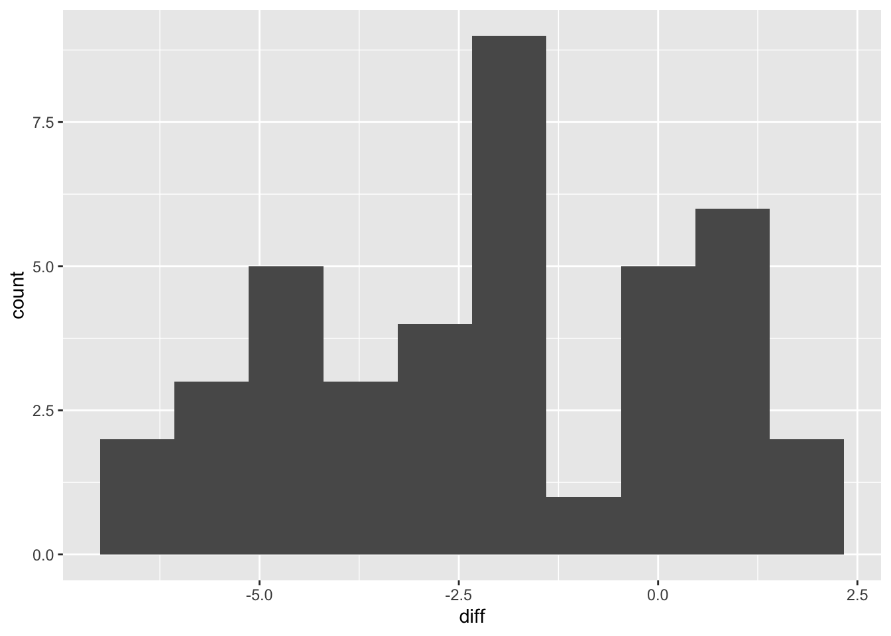
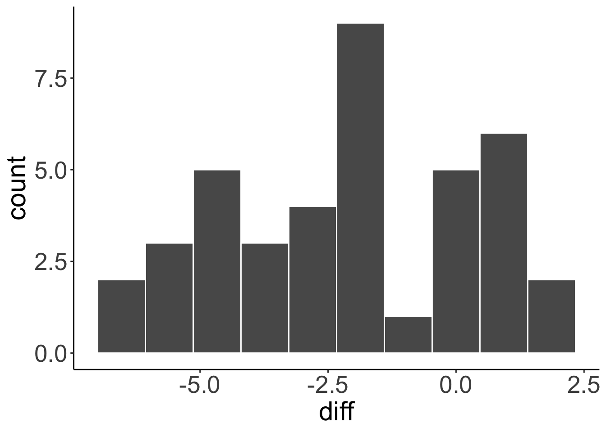
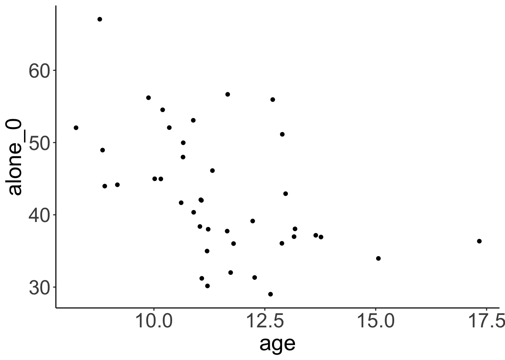
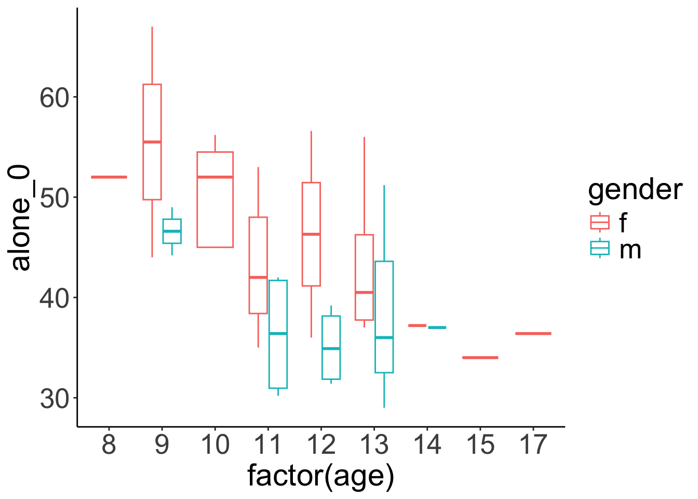

# check your current working directory
getwd()[1] "/Users/robertbrotherton/Documents/r-workshop"# should be your project folderIn RStudio, click:
File > New Project > New Directory > New Project
Once you have created the Project, save these files into your Project folder:
Back in RStudio you should see those files appear in the Files pane in the bottom-right. Click triplett_analysis.R to open that code file in the Editor pane.
R can access your entire filesystem, so you can access and create files anywhere on your hard drive. It can be a bit tedious to type explicit complete file paths every time you need to read or write a file, however. E.g.:
"/Users/robertbrotherton/Documents/r-workshop/triplett_data.csv"
Another big drawback is that if you share your code for someone else to run on their own computer, the filepaths will not work, since their folder will likely have different names.
Projects help to overcome these kinds of issues. When working in a project, the ‘working directory’ is the Project’s folder.
# check your current working directory
getwd()[1] "/Users/robertbrotherton/Documents/r-workshop"# should be your project folderWhenever you use a function that requires you to specify a filename, the function will be looking in that directory. So you can type:
read_csv(file = "triplett_data.csv")…and if the file is in your Project folder it will be found. And if someone else runs the code on their computer, the file will be found as long as it is in their Project folder.
One of the strengths of R as a language for data analysis is its ecosystem of additional packages that make common tasks easier and code more eloquent. For the demonstrations here we’ll lean heavily into the tidyverse ecosystem. We’ll also use a few helpful function from other packages.
The packages will need to be installed once, if they aren’t already on your system. Once you have installed them, I recommend turning that code into a comment so it doesn’t get executed again by accident.
# install external packages if you don't already have them
# install.packages(c("tidyverse", "corrplot","effectsize", "lme4", "lmerTest))Then you can activate the packages with the `library() function.
library(tidyverse)── Attaching core tidyverse packages ──────────────────────── tidyverse 2.0.0 ──
✔ dplyr 1.1.4 ✔ readr 2.1.5
✔ forcats 1.0.0 ✔ stringr 1.5.1
✔ ggplot2 3.5.1 ✔ tibble 3.2.1
✔ lubridate 1.9.4 ✔ tidyr 1.3.1
✔ purrr 1.0.4
── Conflicts ────────────────────────────────────────── tidyverse_conflicts() ──
✖ dplyr::filter() masks stats::filter()
✖ dplyr::lag() masks stats::lag()
ℹ Use the conflicted package (<http://conflicted.r-lib.org/>) to force all conflicts to become errorslibrary(effectsize)
library(corrplot)corrplot 0.95 loadedlibrary(lme4)Loading required package: Matrix
Attaching package: 'Matrix'
The following objects are masked from 'package:tidyr':
expand, pack, unpackR has a built-in function to read data from a .csv (comma-separated values) file like the one you downloaded: read.csv(). It works perfectly fine. However the tidyverse package readr has it’s own read_csv() function. In practice, they will give identical results, however I prefer to use the readr::read_csv since it gives some useful information when you run it.
triplett_data <- read_csv("triplett_data.csv")
# no output, but check your Global EnvironmentRows: 40 Columns: 12
── Column specification ────────────────────────────────────────────────────────
Delimiter: ","
chr (4): subject, gender, group, classification
dbl (8): age, alone_0, competition_1, alone_1, competition_2, alone_2, compe...
ℹ Use `spec()` to retrieve the full column specification for this data.
ℹ Specify the column types or set `show_col_types = FALSE` to quiet this message.The raw comma-separated-values data get interpreted as a data.frame object that exists in R’s memory with the name triplett_data. You can click it’s name in your Global Environment to inspect it.
Note that as a data analysis project becomes more complicate it may be useful to keep data files in a subdirectory of the Project folder. If your data was inside a folder named data_raw inside your main Project folder, for example, you would change the file argument to reflect that path:
# if your data was in a subdirectory...
triplett_data <- read_csv("data_raw/triplett_data.csv")R can import (and write) many other data types, should the need arise.
# Stata
haven::read_stata("stata_file.dta")
# SPSS
haven::read_spss("spss_file.sav")
# SAS
haven::read_sas("sas_file.sas")
# Excel
readxl::read_excel("excel_file.xlsx", sheet = "sheet name")You can string together different operations in a pipeline using the pipe operator: |>.1 The result of each line of code gets “piped” into the function on the next line as its first argument. That is very handy when a function is expecting a data.frame as its first argument. The tidyverse family of packages are all written with this syntax in mind, so they are great for building efficient and eloquent analytic pipelines.
my_data |>
filter(a > 3)
# is equivalent to
filter(my_data, a > 3)The real power of this become apparent when you need to conduct a more elaborate sequence of steps. We can pass a data.frame from function to function, modifying it along the way. The pipe allows the code to be neatly segmented and readable as a set of instruction from top to bottom.
# building a more elaborate pipeline
my_data |>
filter(a > 3) |>
mutate(c = a + b) |>
select(b, c)Selecting columnsSometimes your raw data file has more columns that you need. dplyr’s select() function lets you choose which columns you want by typing their names with commas between. No need for quotation marks.
triplett_data |>
select(subject, age, gender)
# you can also rename as you select
triplett_data |>
select(participant = subject, age, gender)Filtering rowsselect() allows you to pick which columns you want; filter() allows you to pick which rows. Inside the function, you articulate a condition which can either be TRUE or FALSE. Each row will be checked, and those for which the condition is TRUE will be retained while those for which it is FALSE are dropped.
triplett_data_subset <- triplett_data |>
filter(group == "A")You can also specify multiple conditions as necessary. All conditions must evaluate to TRUE for a row to be retained.
triplett_data_subset <- triplett_data |>
filter(group == "A", age >= 10)Mutate some dataThe dplyr function mutate() creates new columns or modifies existing columns. The general syntax is to specify the name of the column you want to create or modify, then an equals sign, then the operation which will compute the new values for that column. This will often be a function of existing variables, which you can refer to by name with no quotation marks. You can mutate more than one column at a time by separating the arguments with a comma.
triplett_data <- triplett_data |>
mutate(gender = factor(gender),
group = factor(group))triplett_data_recoded <- triplett_data |>
mutate(alone_mean = rowMeans(across(contains("alone"))))
# produces NAs for some participants! oh no! why? can you fix it?triplett_data_recoded <- triplett_data |>
mutate(alone_mean = rowMeans(across(contains("alone")), na.rm = TRUE))
# can you add code to get the mean competition score, and a difference score?
triplett_data_recoded <- triplett_data |>
mutate(alone_mean = rowMeans(across(contains("alone")), na.rm = TRUE),
competition_mean = rowMeans(across(contains("competition")), na.rm = TRUE),
diff = competition_mean - alone_mean)case_when()What if you need to create a new variable which differs depending on the value of an existing variable? case_when() allows us to articulate a set of conditions, and what value to assign when the condition is met.
triplett_data_recoded <- triplett_data_recoded |>
mutate(effect = case_when(
diff < -sd(diff) ~ "improved",
diff > sd(diff) ~ "impaired",
TRUE ~ "no difference"
))The conditions are checked in order. The final step, TRUE ~ "no difference" is the default value that will be assigned to any row which has not met any of the prior conditions (because TRUE will be true of every row).
Sometimes it is useful to reshape data from wide to long format. The Triplett data in its initial .csv form is wide; each row contains multiple observations from a single participant. It will be helpful to have a long version of this, in which each row corresponds to a single observation.
triplett_long <- triplett_data |>
pivot_longer(contains(c("alone", "competition")),
names_to = c("condition", "trial"),
names_sep = "_",
values_to = "performance")Once you have a new version of your data, you may wish to save it as a new file for easy sharing or reuse.
One option is to save it as an R data file. Obviously this is specialized for R and cannot be opened in Excel, for example.
saveRDS(triplett_long, "triplett_long.RDS")Another option is to save it as a .csv file.
readr::write_csv(triplett_long, "triplett_long.csv")A quick and easy way to get some summary statistics for a data.frame is to use the summary() function.
triplett_data_recoded |>
select(age, gender, group, alone_mean, competition_mean, diff) |>
summary() age gender group alone_mean competition_mean
Min. : 8.00 f:26 A:20 Min. :27.67 Min. :27.20
1st Qu.:10.75 m:14 B:20 1st Qu.:34.04 1st Qu.:33.05
Median :11.00 Median :39.22 Median :36.98
Mean :11.50 Mean :39.48 Mean :37.41
3rd Qu.:13.00 3rd Qu.:44.62 3rd Qu.:41.43
Max. :17.00 Max. :57.13 Max. :50.73
diff
Min. :-6.4000
1st Qu.:-4.1250
Median :-1.7417
Mean :-2.0694
3rd Qu.: 0.1625
Max. : 2.0000 triplett_data_recoded |>
count(gender, classification) |>
mutate(prop = n / sum(n), .by = gender)| gender | classification | n | prop |
|---|---|---|---|
| f | little affected | 6 | 0.2307692 |
| f | stimulated adversely | 5 | 0.1923077 |
| f | stimulated positively | 15 | 0.5769231 |
| m | little affected | 4 | 0.2857143 |
| m | stimulated adversely | 5 | 0.3571429 |
| m | stimulated positively | 5 | 0.3571429 |
The dplyr function summarize() is a powerful way of producing summary statistics from a data.frame. Its syntax is similar to that of mutate(): you specify the name of a column you would like to create, then an equals sign, then the operation(s) that will compute the desired value, e.g. mean_score = mean(scores).
The difference between summarize() and mutate() is that mutate() modifies the full dataset, whereas summarize() produces a new data.frame by reducing the values in the dataset down to a single summary value such as a mean, standard deviation, or whatever other summary statistic you might like to compute.
triplett_data_recoded |>
summarize(n = n(),
mean_diff = mean(diff),
sd_diff = sd(diff),
range = max(diff) - min(diff))| n | mean_diff | sd_diff | range |
|---|---|---|---|
| 40 | -2.069417 | 2.475617 | 8.4 |
summarize()’s superpower is it’s special argument, .by. This lets us specify a grouping variable. Whatever summary statistics you ask for will be computed separately for each level of the grouping variable.
triplett_data_recoded |>
summarize(n = n(),
mean_diff = mean(diff),
sd_diff = sd(diff),
range = max(diff) - min(diff),
.by = gender)| gender | n | mean_diff | sd_diff | range |
|---|---|---|---|---|
| f | 26 | -2.631795 | 2.602639 | 8.40 |
| m | 14 | -1.025000 | 1.884777 | 6.05 |
triplett_data_recoded |>
summarize(n = n(),
mean_diff = mean(diff),
sd_diff = sd(diff),
range = max(diff) - min(diff),
.by = classification)| classification | n | mean_diff | sd_diff | range |
|---|---|---|---|---|
| stimulated positively | 20 | -3.841667 | 1.825137 | 6.550000 |
| stimulated adversely | 10 | 0.530000 | 1.346344 | 3.850000 |
| little affected | 10 | -1.124333 | 1.494226 | 4.793333 |
You can have any number of grouping variables; just collect them together with the c() function when using the .by argument. Summary statistics will be produced for all combination of the variables that you specify.
triplett_long |>
summarize(average = mean(performance),
.by = c(classification, condition, trial, group))| classification | condition | trial | group | average |
|---|---|---|---|---|
| stimulated positively | alone | 0 | A | 47.49 |
| stimulated positively | alone | 1 | A | 42.60 |
| stimulated positively | alone | 2 | A | 38.42 |
| stimulated positively | alone | 3 | A | NA |
| stimulated positively | competition | 1 | A | 41.88 |
| stimulated positively | competition | 2 | A | 39.28 |
| stimulated positively | competition | 3 | A | 36.30 |
| stimulated positively | alone | 0 | B | 48.20 |
| stimulated positively | alone | 1 | B | 45.68 |
| stimulated positively | alone | 2 | B | 42.78 |
| stimulated positively | alone | 3 | B | 39.82 |
| stimulated positively | competition | 1 | B | 41.20 |
| stimulated positively | competition | 2 | B | 39.04 |
| stimulated positively | competition | 3 | B | NA |
| stimulated adversely | alone | 0 | A | 40.84 |
| stimulated adversely | alone | 1 | A | 39.72 |
| stimulated adversely | alone | 2 | A | 39.00 |
| stimulated adversely | alone | 3 | A | NA |
| stimulated adversely | competition | 1 | A | 43.32 |
| stimulated adversely | competition | 2 | A | 41.48 |
| stimulated adversely | competition | 3 | A | 37.40 |
| stimulated adversely | alone | 0 | B | 39.08 |
| stimulated adversely | alone | 1 | B | 36.48 |
| stimulated adversely | alone | 2 | B | 34.76 |
| stimulated adversely | alone | 3 | B | 34.56 |
| stimulated adversely | competition | 1 | B | 36.36 |
| stimulated adversely | competition | 2 | B | 36.44 |
| stimulated adversely | competition | 3 | B | NA |
| little affected | alone | 0 | A | 31.80 |
| little affected | alone | 1 | A | 30.80 |
| little affected | alone | 2 | A | 31.52 |
| little affected | alone | 3 | A | NA |
| little affected | competition | 1 | A | 30.24 |
| little affected | competition | 2 | A | 31.56 |
| little affected | competition | 3 | A | 31.32 |
| little affected | alone | 0 | B | 39.44 |
| little affected | alone | 1 | B | 33.64 |
| little affected | alone | 2 | B | 32.16 |
| little affected | alone | 3 | B | 32.56 |
| little affected | competition | 1 | B | 32.84 |
| little affected | competition | 2 | B | 32.96 |
| little affected | competition | 3 | B | NA |
plotshist(x = triplett_data_recoded$diff)
plot(x = triplett_data_recoded$age,
y = triplett_data_recoded$alone_0)
plot(diff ~ gender, data = triplett_data_recoded)
boxplot(diff ~ classification, data = triplett_data_recoded)
ggplotAs usual, there are many ways of visualizing data in R, but the most widely used and flexible is probably the ggplot2 package. This package isn’t built-in to R; someone else created it and made it freely available as an add-on. For packages like that, we have to tell R we want to use them using the library() function.
The “gg” in “ggplot” refers to the “grammar of graphics”. ggplot works by layering, using the + symbol. The first line specifies the name of the data.frame and the ‘aesthetics’: we want the scores (which are in a column conveniently named scores in the data.frame) on the x-axis. Then we add geom_bar() as the geometry layer. geom_bar is designed to take a set of scores and calculate the frequencies, which become the height of the bars on the \(y\)-axis (which is why we don’t need to explicitly specific a \(y\) aesthetic in the aes() function.
triplett_data_recoded |>
ggplot(aes(x = diff)) +
geom_histogram(bins = 10)
For a scatterplot, we would specify both x and y aesthetics, and use geom_point() for the geometry.
triplett_data_recoded |>
ggplot(aes(x = age, y = alone_0)) +
geom_point(position = "jitter")
There are other aesthetics beyond x and y. We can also map data to a color or fill aesthetic, for example. Let’s also add fit lines using the geom_smooth() geometry, specifying the method used to compute the lines with method = "lm" (for “linear model”). Notice that we get two different lines, distinguished according to the color aesthetic. Since we specified that in the initial ggplot(aes(...)) part, it applies to all subsequent layers of the plot.
triplett_data_recoded |>
ggplot(aes(x = age, y = alone_0, color = gender)) +
geom_point() +
geom_smooth(method = "lm")`geom_smooth()` using formula = 'y ~ x'
triplett_data |>
ggplot(aes(x = factor(age), y = alone_0, color = gender)) +
geom_boxplot()
For more complex visuals, it can be useful to combine summarize() for computing summary stats with ggplot for visualizing the resulting results.
triplett_long |>
summarize(performance = mean(performance, na.rm = TRUE),
.by = c(trial, condition)) |>
ggplot(aes(x = trial, y = performance, fill = condition)) +
geom_col(position = "dodge")
cor.test(triplett_data$age, triplett_data$alone_0)
Pearson's product-moment correlation
data: triplett_data$age and triplett_data$alone_0
t = -3.2537, df = 38, p-value = 0.002394
alternative hypothesis: true correlation is not equal to 0
95 percent confidence interval:
-0.6794952 -0.1817032
sample estimates:
cor
-0.4667911 triplett_data |>
select(contains("alone"), contains("competition")) |>
cor(use = "pairwise") |>
corrplot::corrplot(method = 'shade')
# are the genders differently distributed among Triplett's classification categories
chisq.test(x = triplett_data_recoded$classification,
y = triplett_data_recoded$gender)Warning in chisq.test(x = triplett_data_recoded$classification, y =
triplett_data_recoded$gender): Chi-squared approximation may be incorrect
Pearson's Chi-squared test
data: triplett_data_recoded$classification and triplett_data_recoded$gender
X-squared = 1.978, df = 2, p-value = 0.3719R has a t.test() function built in. When the DV is in one column and the IV grouping variable is in another, we can specify a formula using those column names in the generic format DV ~ IV (as in, ‘compare scores on the DV by the groups of the IV’).
# is there a difference between the genders?
t.test(alone_0 ~ gender, data = triplett_data)
Welch Two Sample t-test
data: alone_0 by gender
t = 2.9599, df = 31.645, p-value = 0.005788
alternative hypothesis: true difference in means between group f and group m is not equal to 0
95 percent confidence interval:
2.315627 12.551406
sample estimates:
mean in group f mean in group m
45.41923 37.98571 effectsize::cohens_d(alone_0 ~ gender, data = triplett_data)| Cohens_d | CI | CI_low | CI_high |
|---|---|---|---|
| 0.9234365 | 0.95 | 0.2360446 | 1.599793 |
The aov() function computes an ANOVA model. It accepts a formula in the form DV ~ IV, just like the independent-samples t.test() example above.
aov(diff ~ classification, data = triplett_data_recoded)Call:
aov(formula = diff ~ classification, data = triplett_data_recoded)
Terms:
classification Residuals
Sum of Squares 139.31890 99.69957
Deg. of Freedom 2 37
Residual standard error: 1.641518
Estimated effects may be unbalancedSometimes, like with aov(), the function that computes a model doesn’t tell us everything we typically want to know about that model. It is often useful to assign the model to a name, and then ask for a summary of the model:
anova <- aov(diff ~ classification, data = triplett_data_recoded)
summary(anova) Df Sum Sq Mean Sq F value Pr(>F)
classification 2 139.3 69.66 25.85 9.44e-08 ***
Residuals 37 99.7 2.69
---
Signif. codes: 0 '***' 0.001 '**' 0.01 '*' 0.05 '.' 0.1 ' ' 1regression_model <- lm(diff ~ age * gender, data = triplett_data_recoded)
summary(regression_model)
Call:
lm(formula = diff ~ age * gender, data = triplett_data_recoded)
Residuals:
Min 1Q Median 3Q Max
-3.7626 -1.8964 -0.0238 1.7587 5.0268
Coefficients:
Estimate Std. Error t value Pr(>|t|)
(Intercept) -5.4370 2.8466 -1.910 0.0641 .
age 0.2456 0.2457 0.999 0.3243
genderm 3.2319 6.1234 0.528 0.6009
age:genderm -0.1442 0.5236 -0.275 0.7846
---
Signif. codes: 0 '***' 0.001 '**' 0.01 '*' 0.05 '.' 0.1 ' ' 1
Residual standard error: 2.412 on 36 degrees of freedom
Multiple R-squared: 0.1238, Adjusted R-squared: 0.05075
F-statistic: 1.695 on 3 and 36 DF, p-value: 0.1854broom::tidy(regression_model)| term | estimate | std.error | statistic | p.value |
|---|---|---|---|---|
| (Intercept) | -5.4369621 | 2.8465542 | -1.9100153 | 0.0641236 |
| age | 0.2455702 | 0.2457286 | 0.9993555 | 0.3242927 |
| genderm | 3.2318877 | 6.1234287 | 0.5277905 | 0.6008830 |
| age:genderm | -0.1442141 | 0.5235967 | -0.2754298 | 0.7845609 |
broom::glance(regression_model)| r.squared | adj.r.squared | sigma | statistic | p.value | df | logLik | AIC | BIC | deviance | df.residual | nobs |
|---|---|---|---|---|---|---|---|---|---|---|---|
| 0.1237728 | 0.0507539 | 2.411975 | 1.695078 | 0.1853631 | 3 | -89.86817 | 189.7363 | 198.1807 | 209.4345 | 36 | 40 |
lmerTest::lmer(performance ~ condition * age + (1 | subject),
data = triplett_long)Linear mixed model fit by REML ['lmerModLmerTest']
Formula: performance ~ condition * age + (1 | subject)
Data: triplett_long
REML criterion at convergence: 1406.319
Random effects:
Groups Name Std.Dev.
subject (Intercept) 5.109
Residual 3.667
Number of obs: 241, groups: subject, 40
Fixed Effects:
(Intercept) conditioncompetition age
61.8905 -4.6967 -1.9463
conditioncompetition:age
0.2281 mixed_model <- lmerTest::lmer(performance ~ condition * age + group + (1 | subject),
data = triplett_long)
summary(mixed_model)Linear mixed model fit by REML. t-tests use Satterthwaite's method [
lmerModLmerTest]
Formula: performance ~ condition * age + group + (1 | subject)
Data: triplett_long
REML criterion at convergence: 1403
Scaled residuals:
Min 1Q Median 3Q Max
-2.1757 -0.6269 -0.1108 0.4602 3.4458
Random effects:
Groups Name Variance Std.Dev.
subject (Intercept) 26.52 5.150
Residual 13.44 3.667
Number of obs: 241, groups: subject, 40
Fixed effects:
Estimate Std. Error df t value Pr(>|t|)
(Intercept) 61.8434 5.7664 41.4686 10.725 1.57e-13 ***
conditioncompetition -4.6886 3.1964 199.8308 -1.467 0.14399
age -1.9923 0.5002 41.3136 -3.983 0.00027 ***
groupB 1.1393 1.7148 37.1406 0.664 0.51056
conditioncompetition:age 0.2287 0.2753 199.8510 0.831 0.40713
---
Signif. codes: 0 '***' 0.001 '**' 0.01 '*' 0.05 '.' 0.1 ' ' 1
Correlation of Fixed Effects:
(Intr) cndtnc age groupB
cndtncmpttn -0.236
age -0.977 0.230
groupB -0.013 0.005 -0.138
cndtncmptt: 0.232 -0.988 -0.233 0.002triplett_long |>
mutate(trial = as.integer(trial)) |>
ggplot(aes(x = trial, y = performance, group = subject, color = condition)) +
geom_line(alpha = 0.3) +
stat_summary(aes(group = condition), fun = mean, geom = "line", size = 1.2, color = "black") +
facet_wrap(~condition) +
labs(title = "Performance over Trials by Condition",
x = "Trial", y = "Reeling Speed (or whatever units)",
caption = "Gray lines = individual subjects; bold line = group mean") +
theme_minimal()Warning: Using `size` aesthetic for lines was deprecated in ggplot2 3.4.0.
ℹ Please use `linewidth` instead.Warning: Removed 39 rows containing non-finite outside the scale range
(`stat_summary()`).Warning: Removed 19 rows containing missing values or values outside the scale range
(`geom_line()`).
If you’re looking at R code from elsewhere (e.g. looking up help online) you may see a different pipe: %>%. The |> pipe, called the “native” pipe, was only included as a feature of base R relatively recently. Until then, the %>% pipe was provided by an external package (called magrittr. Get it?). In practice the pipes work similarly, so you can often just replace %>% with |> and it’ll work fine, but it’s worth being aware of.↩︎
{kind=link}